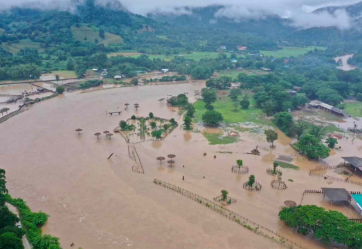
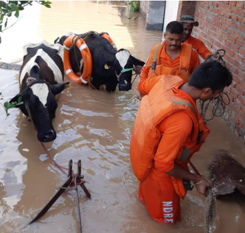

Emergency Disaster Relief

Rebuilding wildlife sanctuaries damaged by floods and ensuring the safety of rescued animals.
Target: ₹1,500,000
Raised: ₹1,000,000
Donate Now
Rescuing animals from wildfire-affected areas and providing emergency medical care.
Target: ₹800,000
Raised: ₹400,000
Donate Now

Providing food and shelter to animals affected by floods and heavy rains.
Target: ₹600,000
Raised: ₹250,000
Donate Now